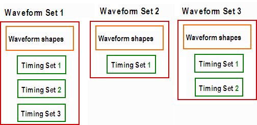

Data organization of fixed timing
With fixed timing, timing data is organized in one or more waveform sets, which are identified by a number. Every waveform set contains one set of waveform shapes (physical and logical waveforms, device cycles), and one or more timing sets that contain different sets of values for the edge positions. Timing sets are also identified by a number, which counts the timing sets of one waveform set.
The following figure illustrates the structure:

Waveform sets can be created and maintained with firmware commands that define the different types of data within the waveform set. Thus, you can define
- logical waveforms with the WFDS command,
- physical waveforms with the WAVE command,
- edge delays with the ETDS command, and
- periods with the PCLK command.
Functional changes
- Introduced before SmarTest 6.3.2